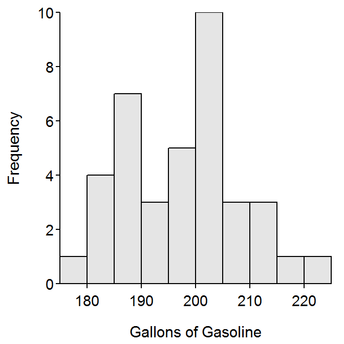
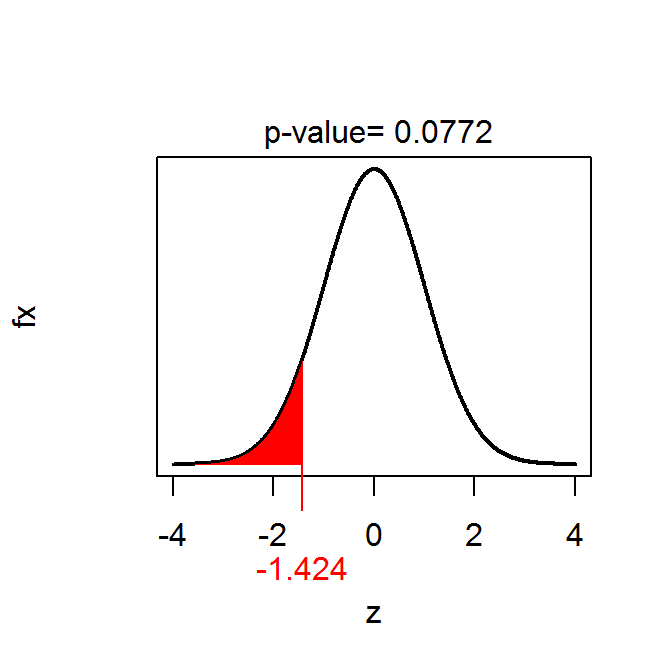

Barrels designed to hold 200-gallons of gasoline were recently found in an abandoned warehouse. The contents of a random sample of 38 barrels were carefully measured to determine if the barrels had leaked a significant amount of gasoline. Assume that it is known that the actual content of the barrels has a standard deviation of 10 gallons. The results for the sample are found in barrels.csv on the class webpage. Use results computed from the sample to determine, at the 10% level, if there is evidence that the barrels had leaked.
> library(NCStats)
> setwd("C:/aaaWork/Web/GitHub/NCMTH107/resources/class/HOs")
> brls <- read.csv("Barrels.csv")
> str(brls)'data.frame': 38 obs. of 2 variables:
$ barrel : int 1 2 3 4 5 6 7 8 9 10 ...
$ gasoline: num 183 197 192 200 190 ...> Summarize(~gasoline,data=brls,digits=1) n nvalid mean sd min Q1 median Q3 max percZero
38.0 38.0 197.7 10.6 178.8 189.5 199.3 204.4 223.4 0.0 > hist(~gasoline,data=brls,xlab="Gallons of Gasoline")
> ( gas.z <- z.test(brls$gasoline,sd=10,mu=200,alt="less",conf.level=0.90) )One Sample z-test with brls$gasoline
z = -1.4243, n = 38.000, Std. Dev. = 10.000, Std. Dev. of the sample mean =
1.622, p-value = 0.07718
alternative hypothesis: true mean is less than 200
90 percent confidence interval:
-Inf 199.7684
sample estimates:
mean of brls$gasoline
197.6895 > plot(gas.z)